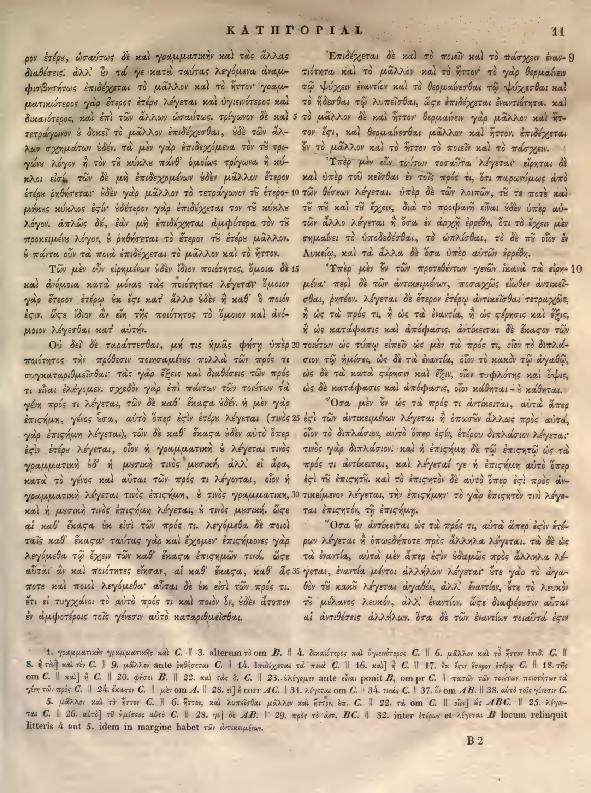

11a
| 1 | ρον ἑτέρῳ, ὡσαύτως δὲ καὶ γραμματικὴν καὶ τὰς ἄλλας | 0.90 |
|---|---|---|
| 2 | διαθέσεις. ἀλλ’ ἐν τά γε κατὰ ταύτας λεγόμενα ἀναμ- | 0.90 |
| 3 | φισβητήτως ἐπιδέχεται τὸ μᾶλλον καὶ τὸ ἧττον· γραμ- | 0.90 |
| 4 | ματικώτερος γὰρ ἕτερος ἑτέρου λέγεται καὶ ὑγιεινότερος καὶ | 0.90 |
| 5 | δικαιότερος, καὶ ἐπὶ τῶν ἄλλων ὡσαύτως. τρίγωνον δὲ καὶ | 0.90 |
| 6 | τετράγωνον οὐ δοκεῖ τὸ μᾶλλον ἐπιδέχεσθαι, οὐδὲ τῶν ἄλ- | 0.90 |
| 7 | λων σχημάτων οὐδέν. τὰ μὲν γὰρ ἐπιδεχόμενα τὸν τοῦ τρι- | 0.90 |
| 8 | γώνου λόγον ἢ τὸν τοῦ κύκλου πάνθ’ ὁμοίως τρίγωνα ἢ κύ- | 0.90 |
| 9 | κλοι εἰσίν, τῶν δὲ μὴ ἐπιδεχομένων οὐδὲν μᾶλλον ἕτερον | 0.90 |
| 10 | ἑτέρου ῥηθήσεται· οὐδὲν γὰρ μᾶλλον τὸ τετράγωνον τοῦ ἑτέρο- | 0.90 |
| 11 | μήκους κύκλος <choice><sic>ἐςίν</sic><corr>ἐστίν</corr></choice>· οὐδέτερον γὰρ ἐπιδέχεται τὸν τοῦ κύκλου | 0.90 |
| 12 | λόγον. ἁπλῶς δέ, ἐὰν μὴ ἐπιδέχηται ἀμφότερα τὸν τοῦ | 0.90 |
| 13 | προκειμένου λόγον, οὐ ῥηθήσεται τὸ ἕτερον τοῦ ἑτέρου μᾶλλον. | 0.90 |
| 14 | οὐ πάντα οὖν τὰ ποιὰ ἐπιδέχεται τὸ μᾶλλον καὶ τὸ ἧττον. | 0.90 |
| 15 | Τῶν μὲν οὖν εἰρημένων οὐδὲν ἴδιον ποιότητος, ὅμοια δὲ | 0.90 |
| 16 | καὶ ἀνόμοια κατὰ μόνας τὰς ποιότητας λέγεται· ὅμοιον | 0.90 |
| 17 | γὰρ ἕτερον ἑτέρῳ οὐκ <choice><sic>ἔςι</sic><corr>ἔστι</corr></choice> κατ’ ἄλλο οὐδὲν ἢ καθ’ ὃ ποιόν | 0.90 |
| 18 | <choice><sic>ἐςιν</sic><corr>ἐστιν</corr></choice>. <choice><sic>ὥςε</sic><corr>ὥστε</corr></choice> ἴδιον ἂν εἴη τῆς ποιότητος τὸ ὅμοιον καὶ ἀνό- | 0.90 |
| 19 | μοιον λέγεσθαι κατ’ αὐτήν. | 0.90 |
| 20 | Οὐ δεῖ δὲ ταράττεσθαι, μή τις ἡμᾶς φήσῃ ὑπὲρ | 0.90 |
| 21 | ποιότητος τὴν πρόθεσιν ποιησαμένους πολλὰ τῶν πρός τι | 0.90 |
| 22 | συγκαταριθμεῖσθαι· τὰς γὰρ ἕξεις καὶ διαθέσεις τῶν πρός | 0.90 |
| 23 | τι εἶναι λέγομεν. σχεδὸν γὰρ ἐπὶ πάντων τῶν τοιούτων τὰ | 0.90 |
| 24 | γένη πρός τι λέγεται, τῶν δὲ καθ’ ἕκαστα οὐδέν. ἡ μὲν γὰρ | 0.90 |
| 25 | ἐπιστήμη, γένος ὅσα, αὐτὸ ὅπερ ἐστὶν ἑτέρου λέγεται (τινὸς | 0.90 |
| 26 | γὰρ ἐπιστήμη λέγεται), τῶν δὲ καθ’ ἕκαστα οὐδὲν αὐτὸ ὅπερ | 0.90 |
| 27 | ἐστὶν ἑτέρου λέγεται, οἷον ἡ γραμματικὴ οὐ λέγεται τινὸς | 0.90 |
| 28 | γραμματικὴ οὐδ’ ἡ μουσική τινος μουσική, ἀλλ’ εἰ ἄρα, | 0.90 |
| 29 | κατὰ τὸ γένος καὶ αὗται τῶν πρός τι λέγονται, οἷον ἡ | 0.90 |
| 30 | γραμματικὴ λέγεται τινὸς ἐπιστήμη, οὐ τινὸς γραμματική, | 0.90 |
| 31 | καὶ ἡ μουσική τινος ἐπιστήμη λέγεται, οὐ τινὸς μουσική. ὥστε | 0.90 |
| 32 | αἱ καθ’ ἕκαστα οὐκ εἰσὶ τῶν πρός τι. λεγόμεθα δὲ ποιοὶ | 0.90 |
| 33 | ταῖς καθ’ ἕκαστα· ταύτας γὰρ καὶ ἔχομεν· ἐπιστήμονες γὰρ | 0.90 |
| 34 | λεγόμεθα τῷ ἔχειν τῶν καθ’ ἕκαστα ἐπιστημῶν τινα. ὥστε | 0.90 |
| 35 | αὗται ἂν καὶ ποιότητες εἶεν, αἱ καθ’ ἕκαστα, καθ’ ἃς | 0.90 |
| 36 | ποτε καὶ ποιοὶ λεγόμεθα· αὗται δὲ οὐκ εἰσὶ τῶν πρός τι. | 0.90 |
| 37 | ἔτι εἰ τυγχάνοι τὸ αὐτὸ πρός τι καὶ ποιὸν ὄν, οὐδὲν ἄτοπον | 0.90 |
| 38 | ἐν ἀμφοτέροις τοῖς γένεσιν αὐτὸ καταριθμεῖσθαι. | 0.90 |
11b
| 1 | Ἐπιδέχεται δὲ καὶ τὸ ποιεῖν καὶ τὸ πάσχειν ἐναν- | 0.95 |
|---|---|---|
| 2 | τιότητα καὶ τὸ μᾶλλον καὶ τὸ ἧττον· τὸ γὰρ θερμαίνεσ- | 0.95 |
| 3 | θαι τῷ ψύχεσθαι ἐναντίον καὶ τὸ θερμαίνεσθαι τῷ ψύχεσθαι καὶ | 0.90 |
| 4 | τὸ ἥδεσθαι τῷ λυπεῖσθαι, <choice><sic>ὥςε</sic><corr>ὥστε</corr></choice> ἐπιδέχεται ἐναντιότητα. καὶ | 0.90 |
| 5 | τὸ μᾶλλον δὲ καὶ ἧττον· θερμαίνεσθαι γὰρ μᾶλλον καὶ ἧτ- | 0.95 |
| 6 | τον <choice><sic>ἔςι</sic><corr>ἔστι</corr></choice>, καὶ θερμαίνεσθαι μᾶλλον καὶ ἧττον. ἐπιδέχεται | 0.95 |
| 7 | δὲ τὸ μᾶλλον καὶ τὸ ἧττον τὸ ποιεῖν καὶ τὸ πάσχειν. | 0.95 |
| 8 | Ὑπὲρ μὲν οὖν τούτων τοσαῦτα λέγεται· εἴρηται δὲ | 0.95 |
| 9 | καὶ ὑπὲρ τοῦ κεῖσθαι ἐν τοῖς πρός τι, ὅτι παρονύμως ἀπὸ | 0.90 |
| 10 | τῶν θέσεων λέγεται. ὑπὲρ δὲ τῶν λοιπῶν, τοῦ τε ποτὲ καὶ | 0.95 |
| 11 | τοῦ ποῦ καὶ τοῦ ἔχειν, διὰ τὸ προφανῆ εἶναι οὐδὲν ὑπὲρ αὐ- | 0.90 |
| 12 | τῶν ἄλλο λέγεται ἢ ὅσα ἐν ἀρχῇ ἐρρέθη, ὅτι τὸ ἔχειν μὲν | 0.90 |
| 13 | σημαίνει τὸ ὑποδεδέσθαι, τὸ ὡπλίσθαι, τὸ δὲ ποῦ οἷον ἐν | 0.90 |
| 14 | Λυκείῳ, καὶ τὰ ἄλλα δὲ ὅσα ὑπὲρ αὐτῶν ἐρρέθη. | 0.95 |
| 15 | Ὑπὲρ μὲν οὖν τῶν προτεθέντων γενῶν ἱκανὰ τὰ εἰρη- | 0.95 |
| 16 | μένα· περὶ δὲ τῶν ἀντικειμένων, ποσαχῶς εἴωθεν ἀντικεῖ- | 0.95 |
| 17 | σθαι, ῥητέον. λέγεται δὲ ἕτερον ἑτέρῳ ἀντικεῖσθαι τετραχῶς, | 0.95 |
| 18 | ἢ ὡς τὰ πρός τι, ἢ ὡς τὰ ἐναντία, ἢ ὡς ἕξις καὶ στέρησις, | 0.90 |
| 19 | ἢ ὡς κατάφασις καὶ ἀπόφασις. ἀντίκειται δὲ <choice><sic>ἕκαςον</sic><corr>ἕκαστον</corr></choice> τῶν | 0.95 |
| 20 | τούτων ὡς τύπῳ εἰπεῖν ὡς μὲν τὰ πρός τι, οἷον τὸ διπλά- | 0.95 |
| 21 | σιον τῷ ἡμίσει, ὡς δὲ τὰ ἐναντία, οἷον τὸ κακὸν τῷ ἀγαθῷ, | 0.95 |
| 22 | ὡς δὲ τὰ κατὰ <choice><sic>ςέρησιν</sic><corr>στέρησιν</corr></choice> καὶ ἕξιν, οἷον τυφλότης καὶ ὄψις, | 0.90 |
| 23 | ὡς δὲ κατάφασις καὶ ἀπόφασις, οἷον κάθηται – οὐ κάθηται. | 0.95 |
| 24 | Ὅσα μὲν οὖν ὡς τὰ πρός τι ἀντίκειται, αὐτὰ ἅπερ | 0.95 |
| 25 | <choice><sic>ἐςὶ</sic><corr>ἐστὶ</corr></choice> τῶν ἀντικειμένων λέγεται ἢ ὁπωσοῦν ἄλλως πρὸς αὐτά, | 0.90 |
| 26 | οἷον τὸ διπλάσιον, αὐτὸ ὅπερ <choice><sic>ἐςίν</sic><corr>ἐστίν</corr></choice>, ἑτέρου διπλάσιον λέγεται· | 0.90 |
| 27 | τινὸς γὰρ διπλάσιον. καὶ ἡ <choice><sic>ἐπιςήμη</sic><corr>ἐπιστήμη</corr></choice> δὲ τῷ ἐπιστητῷ ὡς τὰ | 0.90 |
| 28 | πρός τι ἀντίκειται, καὶ λέγεταί γε ἡ ἐπιστήμη αὐτὸ ὅπερ | 0.90 |
| 29 | ἐστὶ τοῦ ἐπιστητοῦ. καὶ τὸ ἐπιστητὸν δὲ αὐτὸ ὅπερ <choice><sic>ἐςὶ</sic><corr>ἐστὶ</corr></choice> πρὸς ἀν- | 0.90 |
| 30 | τικείμενον λέγεται, τὴν ἐπιστήμην· τὸ γὰρ ἐπιστητόν τινι λέγε- | 0.90 |
| 31 | ται ἐπιστητόν, τῇ ἐπιστήμῃ. | 0.95 |
| 32 | Ὅσα δ’ ἀντίκειται ὡς τὰ πρός τι, αὐτὰ ἅπερ <choice><sic>ἐςὶν</sic><corr>ἐστὶν</corr></choice> ἑτέ- | 0.90 |
| 33 | ρων λέγεται ἢ <choice><sic>ὁπωσδήποτε</sic><corr>ὁπωστδήποτε</corr></choice> πρὸς ἄλληλα λέγεται. τὰ δὲ ὡς | 0.90 |
| 34 | τὰ ἐναντία, αὐτὰ μὲν ἅπερ <choice><sic>ἐςὶν</sic><corr>ἐστὶν</corr></choice> οὐδαμῶς πρὸς ἄλληλα λέ- | 0.90 |
| 35 | γεται, ἐναντία μέντοι ἀλλήλων λέγεται· ὅτε γὰρ τὸ ἀγα- | 0.90 |
| 36 | θὸν τῷ κακῷ λέγεται ἀγαθόν, ἀλλ’ ἐναντίον, ὅτε τὸ λευκὸν | 0.90 |
| 37 | τῷ μέλανι λευκόν, ἀλλ’ ἐναντίον. <choice><sic>ὥςε</sic><corr>ὥστε</corr></choice> διαφέρουσιν αὗται | 0.90 |
| 38 | αἱ ἀντιθέσεις ἀλλήλων. ὅσα δὲ τῶν ἐναντίων τοιαῦτά <choice><sic>ἐςιν</sic><corr>ἐστιν</corr></choice> | 0.90 |
Textual apparatus
- n1 [both] 1. γραμματικὴν γραμματικῆς καὶ C. || 3. alterum τὸ om B. || 4. δικαιότερος καὶ ὑγιεινέτερος C. || 6. μᾶλλον καὶ τὸ ἧττον ἐπιδ. C. || 8. ἢ τὸν] καὶ τὸν C. || 9. μᾶλλον ante ῥηθήσεται C. || 14. ἐπιδέχεται τὰ ποιὰ C. || 16. καὶ] ἢ C. || 17. ἓν ἕξιν. ἕτερον ἑτέρῳ C. || 18. τῆς om C. || καὶ] ἢ C. || 20. φήσει B. || 22. καὶ τὰς δ. C. || 23. ἐλέγομεν ante εἶναι ponit B, om pr C. || πασῶν τῶν τοιούτων ποιοτήτων τὰ γένη τῶν πρός C. || 24. ἕκαστον C. || μὲν om A. || 28. εἰ] ἢ corr AC. || 31. λέγεται om C. || 34. τινάς C. || 37. ὧν om AB. || 38. αὐτὸ τοῖς γένεσιν C.
- n2 [both] 5. μᾶλλον καὶ τὸ ἧττον C. || 6. ἧττον, καὶ λυπεῖσθαι μᾶλλον καὶ ἧττον, ἐπ. C. || 22. τὸ om C. || οἷον] ὡς ABC. || 25. λέγονται C. || 26. αὐτὸ] τὸ ἡμίσεος αὐτὸ C. || 28. γε] δὲ AB. || 29. πρὸς τὸ ἀντ. BC. || 32. inter ἑτέρων et λέγεται B locum relinquit litteris 4 aut 5. idem in margine habet τῶν ἀντικειμένων.
Verifier issues
- warning 11b27: possible gutter-copy artifact; column A ends and column B begins with
τινὸς.
Encoded TEI corrections (17)
- a11: <choice><sic>ἐςίν</sic><corr>ἐστίν</corr></choice> (1.00) — Aligned Hathi στ-ligature OCR correction: deterministic repair of the Hathi internal final sigma agrees with the scan and reference crop.
- a17: <choice><sic>ἔςι</sic><corr>ἔστι</corr></choice> (1.00) — Aligned Hathi στ-ligature OCR correction: deterministic repair of the Hathi internal final sigma agrees with the scan and reference crop.
- a18: <choice><sic>ἐςιν</sic><corr>ἐστιν</corr></choice> (1.00) — Aligned Hathi στ-ligature OCR correction: deterministic repair of the Hathi internal final sigma agrees with the scan and reference crop.
- a18: <choice><sic>ὥςε</sic><corr>ὥστε</corr></choice> (1.00) — Aligned Hathi στ-ligature OCR correction: deterministic repair of the Hathi internal final sigma agrees with the scan and reference crop.
- b4: <choice><sic>ὥςε</sic><corr>ὥστε</corr></choice> (1.00) — Aligned Hathi στ-ligature OCR correction: deterministic repair of the Hathi internal final sigma agrees with the scan and reference crop.
- b6: <choice><sic>ἔςι</sic><corr>ἔστι</corr></choice> (1.00) — Aligned Hathi στ-ligature OCR correction: deterministic repair of the Hathi internal final sigma agrees with the scan and reference crop.
- b19: <choice><sic>ἕκαςον</sic><corr>ἕκαστον</corr></choice> (1.00) — Aligned Hathi στ-ligature OCR correction: deterministic repair of the Hathi internal final sigma agrees with the scan and reference crop.
- b22: <choice><sic>ςέρησιν</sic><corr>στέρησιν</corr></choice> (1.00) — Aligned Hathi στ-ligature OCR correction: deterministic repair of the Hathi internal final sigma agrees with the scan and reference crop.
- b25: <choice><sic>ἐςὶ</sic><corr>ἐστὶ</corr></choice> (1.00) — Aligned Hathi στ-ligature OCR correction: deterministic repair of the Hathi internal final sigma agrees with the scan and reference crop.
- b26: <choice><sic>ἐςίν</sic><corr>ἐστίν</corr></choice> (1.00) — Aligned Hathi στ-ligature OCR correction: deterministic repair of the Hathi internal final sigma agrees with the scan and reference crop.
- b27: <choice><sic>ἐπιςήμη</sic><corr>ἐπιστήμη</corr></choice> (1.00) — Aligned Hathi στ-ligature OCR correction: deterministic repair of the Hathi internal final sigma agrees with the scan and reference crop.
- b29: <choice><sic>ἐςὶ</sic><corr>ἐστὶ</corr></choice> (1.00) — Aligned Hathi στ-ligature OCR correction: deterministic repair of the Hathi internal final sigma agrees with the scan and reference crop.
- b32: <choice><sic>ἐςὶν</sic><corr>ἐστὶν</corr></choice> (1.00) — Aligned Hathi στ-ligature OCR correction: deterministic repair of the Hathi internal final sigma agrees with the scan and reference crop.
- b33: <choice><sic>ὁπωσδήποτε</sic><corr>ὁπωστδήποτε</corr></choice> (1.00) — Aligned Hathi στ-ligature OCR correction: deterministic repair of the Hathi internal final sigma agrees with the scan and reference crop.
- b34: <choice><sic>ἐςὶν</sic><corr>ἐστὶν</corr></choice> (1.00) — Aligned Hathi στ-ligature OCR correction: deterministic repair of the Hathi internal final sigma agrees with the scan and reference crop.
- b37: <choice><sic>ὥςε</sic><corr>ὥστε</corr></choice> (1.00) — Aligned Hathi στ-ligature OCR correction: deterministic repair of the Hathi internal final sigma agrees with the scan and reference crop.
- b38: <choice><sic>ἐςιν</sic><corr>ἐστιν</corr></choice> (1.00) — Aligned Hathi στ-ligature OCR correction: deterministic repair of the Hathi internal final sigma agrees with the scan and reference crop.